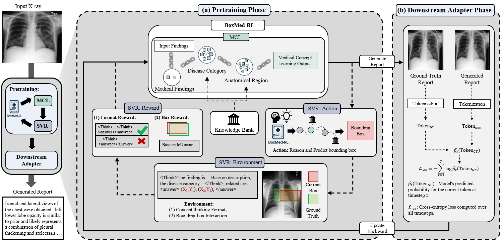
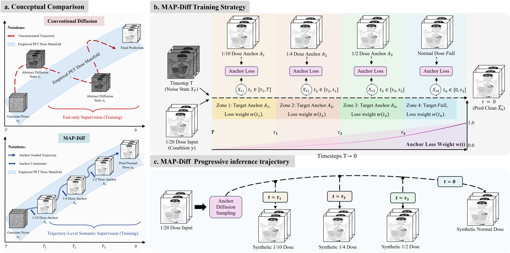
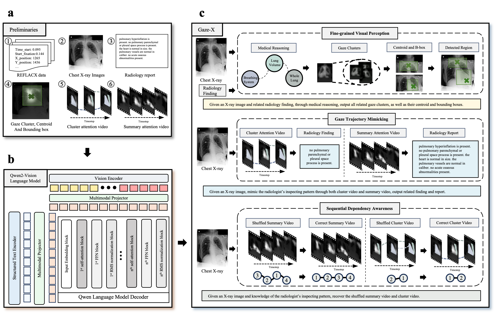
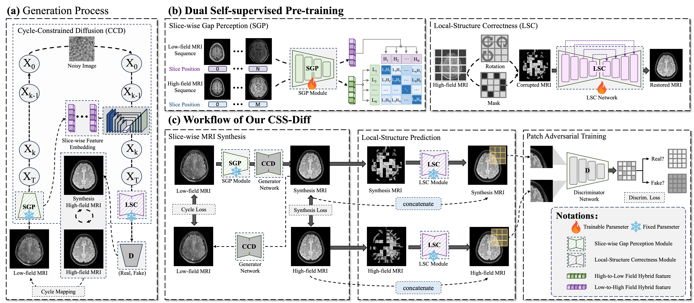
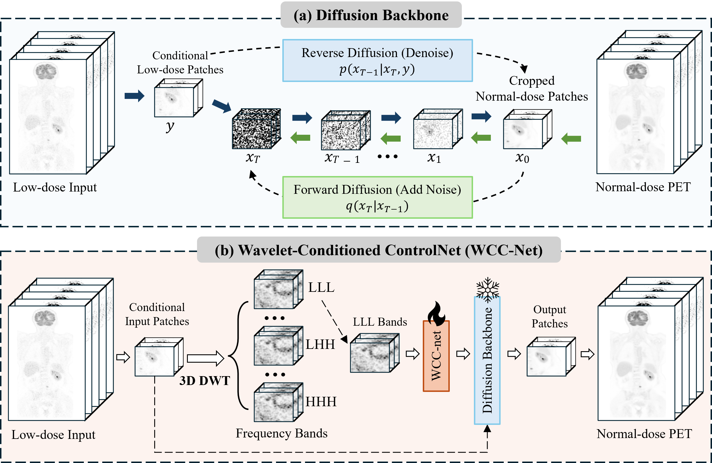
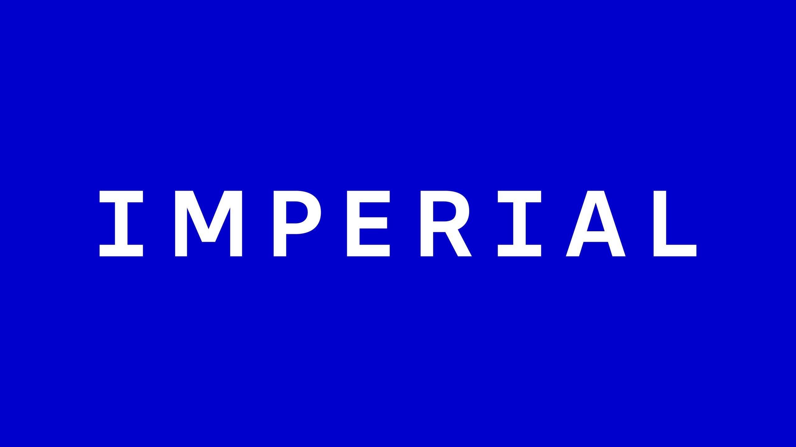
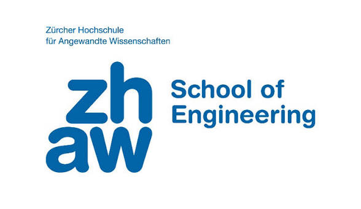
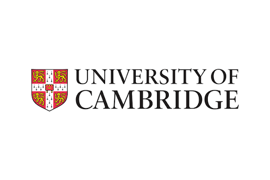

关于我
我目前是英国 帝国理工学院生物工程系 的博士研究生。 我的研究主要位于 人工智能与医学影像 的交叉领域，涉及 X光、磁共振成像（MRI）和正电子发射断层成像（PET）。 我尤其关注生成式人工智能、视觉语言模型、医学图像重建与合成， 以及能够结合临床知识进行学习和推理的人工智能方法。
我的研究希望探索人工智能如何更好地学习和理解复杂的医学影像数据， 同时保证模型具有良好的 可靠性、可解释性和临床意义。 目前的工作包括医学图像重建、图像恢复、跨模态图像合成， 以及利用视觉语言模型和大语言模型进行医学影像理解、 临床推理和放射学报告生成。
我的博士研究由 Dr. Guang Yang（杨光博士） 指导。他是帝国理工学院副教授（Reader）， 我同时也是 YangLab 研究团队的成员； 我的合作导师还包括 Dr. Javier A. Montoya-Zegarra ， 瑞士 苏黎世应用科技大学（ZHAW） 教授； 以及 Dr. Angelica Aviles-Rivero ， 清华大学 丘成桐数学科学中心 助理教授，并领导 MathMLX 研究团队。
我的博士研究获得 瑞士国家科学基金会 （Swiss National Science Foundation, SNSF） 的资助，项目编号： 20HW-1 220785。
研究方向
低剂量 PET 医学影像
研究利用深度学习和生成式人工智能对超低剂量 PET 图像进行恢复与重建， 在降低患者放射性示踪剂使用剂量的同时， 尽可能准确地保留组织代谢信息和病灶等具有临床意义的特征。
生成式医学影像
研究扩散模型等生成式人工智能方法在医学图像重建、去噪、 图像增强以及不同医学影像模态之间图像合成等任务中的应用。
可靠与临床人工智能
研究医学人工智能模型的可靠性、不确定性、病灶层面评估、 医学图像分割以及不同医院和设备之间的泛化能力， 推动人工智能方法更可靠地应用于实际临床环境。
代表性论文


MAP-Diff: Multi-Anchor Guided Diffusion for Progressive 3D Whole-Body Low-Dose PET Denoising
MICCAI 2026 — Oral Presentation
我们提出了一种用于 三维全身超低剂量 PET 图像恢复 的扩散模型。 该方法利用临床中不同扫描剂量下获得的 PET 图像作为中间引导， 让人工智能能够逐步将噪声严重的超低剂量 PET 恢复至接近正常剂量 PET 的图像质量。

Seeing Through Experts' Eyes: A Foundational Vision-Language Model Trained on Radiologists' Gaze and Reasoning
npj Artificial Intelligence, 2026
Gaze-X 将 放射科医生阅片时的眼动轨迹和诊断推理过程 引入医学视觉语言模型的训练。 通过学习专家在看片过程中 “看哪里、什么时候看、如何进行诊断推理”， 模型能够学习更接近临床专家的医学影像理解方式。


3D Wavelet-Based Structural Priors for Controlled Diffusion in Whole-Body Low-Dose PET Denoising
ICPR 2026
WCC-Net 将 三维小波变换得到的结构信息 引入扩散模型， 用于全身超低剂量 PET 图像去噪。 通过利用不同频率下的图像结构信息， 模型能够在降低噪声的同时更好地保持人体解剖结构。
最新动态
联系方式
欢迎就医学影像、生成式人工智能、视觉语言模型、 医学图像重建以及临床人工智能等研究方向与我交流或开展合作。
邮箱： peiyuan.jing22@imperial.ac.uk
英国帝国理工学院
生物工程系
英国 · 伦敦
合作单位与研究支持


